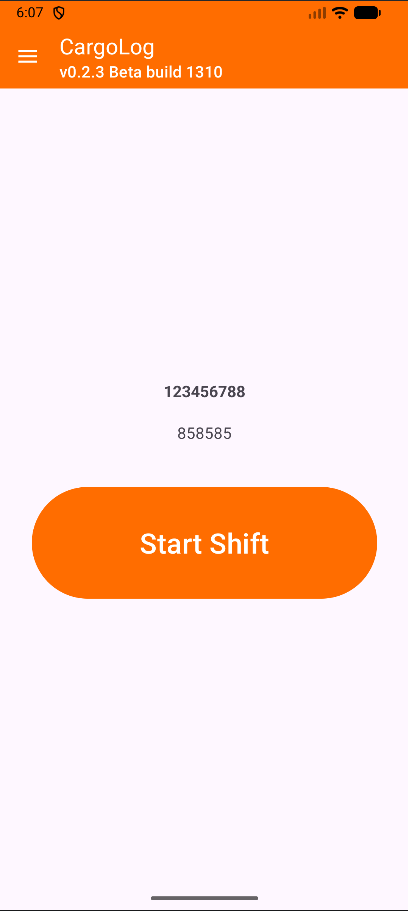
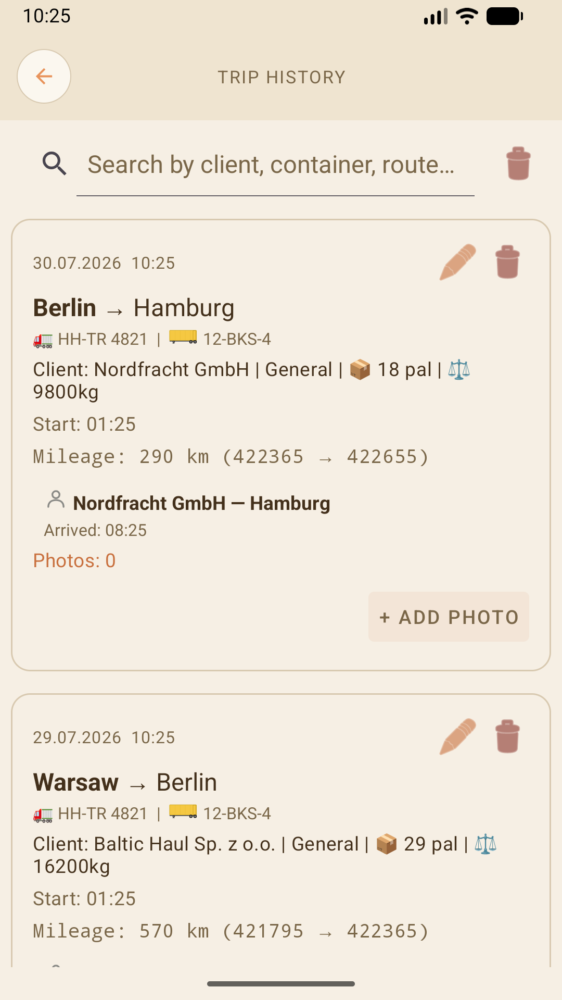
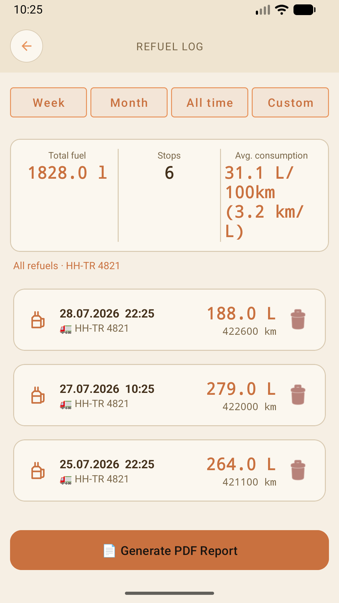
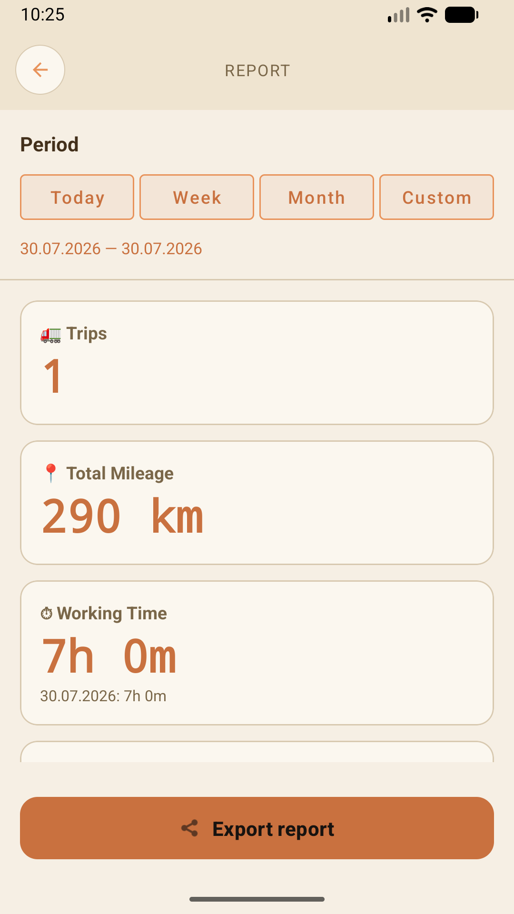
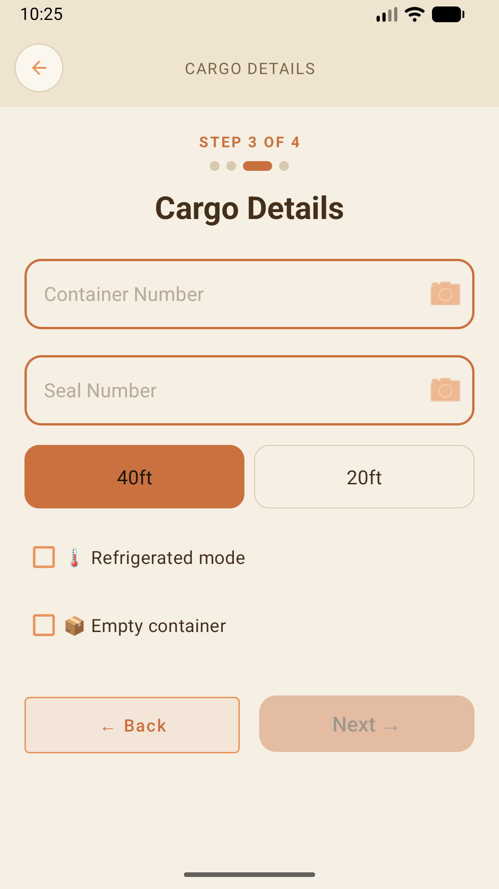

Бесплатное приложение бортового журнала. Рейсы, смены, заправки, грузы и контейнеры. Работает офлайн. Без регистрации. Без рекламы. Данные остаются на телефоне и никуда не уходят, пока вы сами не включите отправку.
Android 7.0+ • ~15 МБ • Бесплатно
CargoLog работает сам по себе и ничего не отправляет по своей воле. Есть канал диагностики на частный сервер разработчика — чтобы разбирать сбои на настоящих данных, а не гадать по описанию. У него три независимых переключателя, и все три выключены, пока вы их не включите:
Каждый переключатель работает сам по себе, выключить любой можно в любой момент; пока сняты все три, не отправляется ничего. Подробно — в Политике конфиденциальности.





Один рейс целиком, от начала до закрытия — 20 секунд без комментариев.
Записывайте каждый рейс от точки отправления до назначения. Одометр, время выезда и прибытия, ожидание, погрузка и разгрузка. Поддержка многоплечевых рейсов — остановка на ночь, продолжение доставки на следующий день.
Поддержка абсолютно всех видов перевозок и типов прицепов, включая работу с кранами и манипуляторами.
Начинайте и завершайте смены. Общее рабочее время, количество рейсов и километраж. История смен с группировкой по датам.
Управляйте тягачами и прицепами. Тип, номер, год выпуска, тип кузова. Переключение между машинами. Поддержка тягачей и ригидных грузовиков с разными конфигурациями прицепов.
Записывайте каждую заправку — литры, одометр, номер машины. Генерация PDF-отчётов.
Встроенные таймеры ожидания у клиента, заправки, разгрузки — с уведомлениями в фоне.
Сканируйте номера контейнеров камерой — полностью офлайн, на телефоне, без интернета. Автоматическая проверка контрольной цифры ISO 6346 с вибрацией. Вертикальное (столбиком сверху вниз) сканирование сейчас в бета-версии.
Храните документы по каждой машине — техпаспорт, страховку, техосмотр. Документы самого водителя лежат рядом с документами тягача и прицепа, с напоминаниями о сроках.
Водители грузовиков, которые работают по найму и хотят простой и быстрый способ вести учёт работы без бумажных бланков.
CargoLog пишет один водитель, открыто. Вот что уже работает, что тестируется и что впереди. Без фиксированных сроков — выходит, когда готово.
CargoLog растёт за пределы журнала одного водителя. Прорабатывается версия для автопарков: